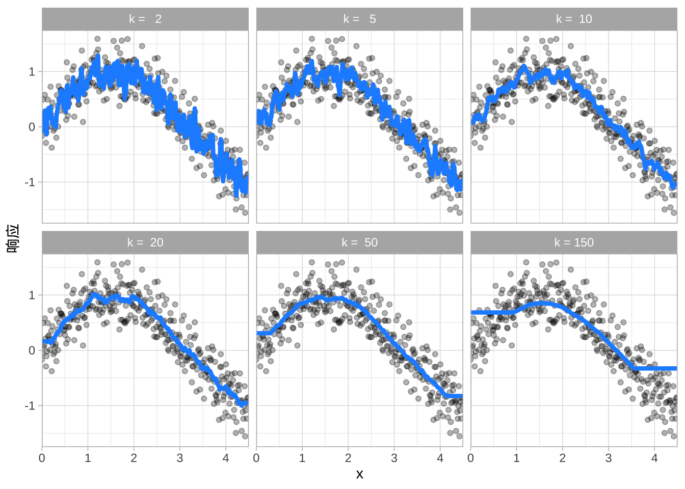
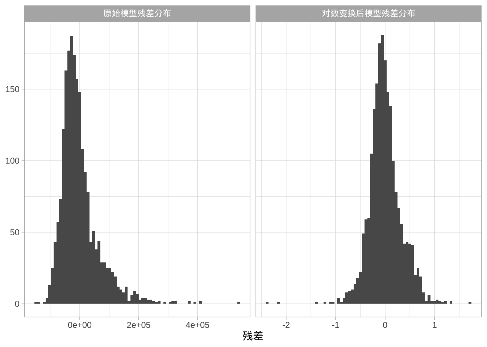
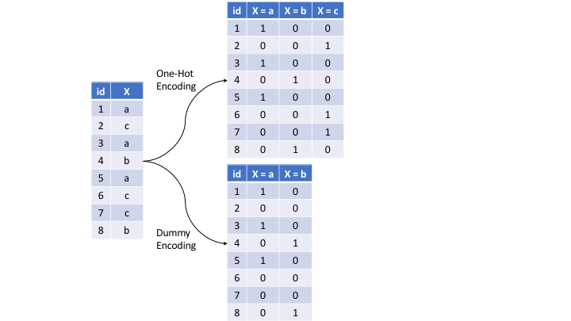

# 数据来源
library(modeldata)
# 数据处理
library(dplyr)
library(ggplot2) # 可视化
# 建模过程
library(rsample) # 数据重采样
library(caret) # 重采样和模型训练
library(h2o) # 分布式建模工具
# h2o 设置
h2o.no_progress()
h2o.init()
## Connection successful!
##
## R is connected to the H2O cluster:
## H2O cluster uptime: 2 hours 44 minutes
## H2O cluster timezone: Asia/Shanghai
## H2O data parsing timezone: UTC
## H2O cluster version: 3.44.0.3
## H2O cluster version age: 1 year, 8 months and 1 day
## H2O cluster name: H2O_started_from_R_liangdan_iua658
## H2O cluster total nodes: 1
## H2O cluster total memory: 3.58 GB
## H2O cluster total cores: 10
## H2O cluster allowed cores: 10
## H2O cluster healthy: TRUE
## H2O Connection ip: localhost
## H2O Connection port: 54321
## H2O Connection proxy: NA
## H2O Internal Security: FALSE
## R Version: R version 4.4.2 (2024-10-31)机器学习基础
1 机器学习简介
机器学习（ML）在公共管理和公共政策领域的重要性日益凸显，在治理实践中也有越来越多的应用场景。以下是几个具体的例子：
社会救助：利用机器学习预测某些低保或临时救助家庭在未来30天内再次申请救助的可能性，从而帮助民政部门优化资源配置，提前介入。
医疗保障：通过历史医保数据预测患者在出院后30天内再次入院的风险，以便医保局和社区卫生服务中心提前安排随访和健康管理。
环境治理：根据垃圾投放频率、社区特征等数据，预测垃圾分类政策的居民参与率，帮助城市管理部门有针对性地开展宣传和监管。
基层治理：将居民按照人口学特征、公共服务需求和社区参与行为进行分群，辅助街道和社区制定更精准的公共服务供给方案。
公共服务流失预警：预测老年人在养老机构或社区养老服务中的“流失率”，便于民政和养老机构提前采取关怀或服务改进措施，减少老年人脱离公共支持体系。
本质上，这些任务都在于从数据中学习。针对不同问题，我们都可以用一组特征数据来训练算法，进而提取出有价值的治理建议。
机器学习算法根据训练过程中所需的监督类型分为两类：
监督学习：构建预测模型（如预测再申请救助、预测再入院风险）。
无监督学习：构建描述模型（如对居民群体进行分群分析）。
至于选择哪种类型的学习方法，则取决于你想要解决的治理任务。
1.1 监督学习
预测模型用于那些需要利用数据集中的其他变量（或特征）来预测某个给定输出（或目标）的任务。预测模型中的学习算法试图发现并建模目标变量（即被预测的变量）与其他特征（即预测变量）之间的关系。
在公共管理和公共政策中的预测建模包括：
根据家庭收入、就业状况等特征，预测某个家庭未来6周内申请最低生活保障的可能性；
根据社区人口结构、基础设施条件等特征，预测该社区房价或公共住房需求；
根据公务员个人背景、工作压力和岗位信息，预测其离职或流动的可能性；
根据居民健康档案和症状数据，预测其在社区医疗机构中再次就诊或住院的风险；
根据地方财政支出结构和政策实施条件，预测某项公共政策（如农村教育项目）的实施周期或效果达成时间。
这些例子都有明确的学习任务：它们都试图利用特征变量（X）来预测一个结果指标（Y）。
在机器学习领域经常交替使用以下术语：
X：预测变量、自变量、属性、特征、预测因子
Y：目标变量、因变量、响应、结果指标
上述预测建模的例子属于监督学习。监督的含义在于：目标值在训练过程中起到“监督”作用，指示学习算法需要学习的任务。具体来说，给定一组数据，学习算法会尝试优化一个函数（即算法步骤），以找到特征值的组合，使预测值尽可能接近真实的目标输出。
在监督学习中，训练数据包含了目标值，因此这些目标值可以帮助“监督”训练过程，找到最优的算法参数。
大多数监督学习问题可归为两类：回归问题或分类问题。
回归问题
当监督学习目标是预测一个数值型结果时，这类任务被称为回归问题（不要与线性回归建模混淆）。回归问题主要关注预测一个落在连续区间上的输出值。
在公共管理的情境下，典型的回归问题包括：
- 根据人口规模、财政投入和教师数量，预测某地区的教育资源人均供给水平；
- 根据历史财政支出和经济发展水平，预测某城市的下一年度公共预算支出总额；
- 根据居民收入、医保报销比例和就医习惯，预测一个地区的医疗费用平均水平；
- 根据城市基础设施条件与人口密度，预测公共交通客流量。
这意味着，在给定一组预测变量的情况下，响应值可能落在某个连续范围内。比如，预测某市的公共预算可能在 100亿元至300亿元 之间。
分类问题
当监督学习目标是预测一个类别型结果时，这类任务被称为分类问题。分类问题通常涉及预测一个二分类或多分类的响应变量，例如：
预测某家庭是否会再次申请低保（是/否）；
预测某居民是否会参加垃圾分类活动（参与/不参与）；
预测某地区某项公共政策是否能够如期完成（完成/未完成）；
对市民的政策满意度进行分类：
- 二分类：满意 vs. 不满意；
- 多分类：非常不满意、不满意、一般、满意、非常满意。
在机器学习模型中，分类问题不仅仅是预测一个固定类别（如“是”或“否”），我们往往希望预测的是某个类别的概率（例如：居民参加垃圾分类的概率为 0.65，不参加的概率为 0.35）。通常情况下，概率最高的类别会被作为最终预测结果。因此，即便分类问题的本质是预测类别，但其输出仍然是一个数值（概率）。
虽然确实存在一些只能用于回归问题或只能用于分类问题的机器学习算法，但大多数常用的监督学习算法都可以应用于两者。这些算法也正是近年来公共管理和公共政策分析中最常见的机器学习方法。
1.2 无监督学习
与监督学习相对，无监督学习是指一套理解和描述数据的统计工具，其分析过程没有目标变量。本质上，无监督学习关注的是在数据集中识别群体。这些群体可能是基于行（即聚类）或列（即降维）而定义的，但两者的动机有所不同。
聚类的目标是基于观测到的变量，将观测对象划分为相似的群体。例如，在公共管理中，可以将城市居民划分为不同的同质群体，以便政府制定差异化的公共服务供给方案。
在降维中，更关注于减少数据集中的变量数量。例如，在社会治理数据中，不同指标可能高度相关（如收入水平、消费能力与住房条件），经典的回归模型在这种情况下会出现问题。一些降维技术可以将变量集合简化为一个更小的不相关变量集，这个新的变量集常常可以作为后续监督学习模型的输入（如主成分回归）。
无监督学习常常作为 探索性数据分析（EDA）的一部分使用。然而，这种分析更具主观性，因为它不像监督学习那样有一个明确的目标（如预测一个结果）。同时，也很难评估无监督学习结果的质量。原因很简单：在监督学习中（比如线性回归），可以通过检验模型在未使用过的数据上的预测效果来验证结果。但在无监督学习中，并不知道“正确答案”为何，因此也就无法直接验证结果的优劣。
尽管具有主观性，但无监督学习的重要性不容忽视，它常被用于政府治理和政策分析，例如：
- 社会服务分群：将居民划分为不同群体（如低收入群体、独居老人群体、新就业人群），以便制定更精准的社会救助或养老服务政策。
- 公共健康管理：识别具有相似健康状况和就诊行为的居民群体，从而为特定人群制定差异化的健康干预措施（如糖尿病高风险人群的专项随访）。
- 基层治理分类：根据居民的参与行为和诉求模式，将社区居民分为积极参与群体、被动接受群体和边缘群体，以帮助街道和社区设计更有效的治理方式。
- 政策指标降维：在涉及大量经济、社会、环境指标的可持续发展评价中，利用降维方法提取几个核心综合指标，为后续政策评估和建模提供更简化的数据输入。
这些问题，以及更多类似的场景，都可以通过无监督学习来解决。此外，无监督学习模型的输出结果往往还能作为输入，供后续的监督学习模型使用。
2 机器学习的建模过程
和探索性数据分析（EDA）类似，机器学习（ML）的建模过程常常是不断摸索迭代的过程。在对问题或数据缺乏充分了解的情况下，很难一开始就确定哪种机器学习方法效果最好。因此，实践中往往需要尝试、评估和修改多种方法，才能最终确定一个最优模型。
正确的机器学习建模意味着要有策略地分配有限的数据资源：科学设计训练集和验证集，合理预处理特征和目标变量，尽量减少数据泄漏，调节超参数，并全面评估模型表现。

2.1 工具与数据
本部分需使用以下R语言包：
本部分使用的示例数据如下：
房产销售信息
- 问题类型：有监督回归
- 响应变量：
Sale_Price（如：$195,000，$215,000） - 特征数量：80
- 观测值数量：2,930
- 研究目标：利用房产属性预测房屋的销售价格
- 数据获取：由 AmesHousing 包提供
员工离职信息（最初由 IBM Watson Analytics Lab 提供）
- 问题类型：有监督二分类
- 响应变量：
Attrition（即：“Yes”，“No”） - 特征数量：30
- 观测值数量：1,470
- 研究目标：利用员工属性预测其是否会离职
- 数据获取：由 rsample 包提供
H2O对象能够调用 H2O 提供的分布式机器学习平台，以便更高效地进行建模与分析。尽管示例的数据量并不大，但是实践中如果针对大数据进行建模和分析，往往需要更有效率的方案。
# 房屋销售数据
ames <- AmesHousing::make_ames()
ames.h2o <- as.h2o(ames)
# 员工离职数据
churn <- modeldata::attrition %>%
# 因为h2o对象不能处理有序变量，要先进行转化成无序的因子
mutate_if(is.ordered, .funs = factor, ordered = FALSE)
churn.h2o <- as.h2o(churn)2.2 数据划分
机器学习的主要目标是找到一个算法 \(f(X)\) 能够基于输入特征 \(X\) 准确预测未来的目标变量 \(\hat{Y}\)。这不仅要求模型在历史数据上拟合良好，更重要的是在未来数据上的预测能力，即模型的泛化能力。
为了客观评估模型的泛化性能，我们通常将数据集划分为训练集与测试集：
- 训练集：用于特征选择、模型训练、超参数调优和模型比较。
- 测试集：在最终确定模型后，用于评估模型的泛化误差。
注意：在最终模型确定之前，不能提前使用测试集，否则会导致结果偏倚。
划分比例常见有 60%–40%，70%–30%，或 80%–20%。一般规律是：
- 训练数据过多（如 >80%）可能导致过拟合。
- 测试数据过多（如 >40%）可能影响参数稳定性。
- 如果样本量极大（如 >100,000），则可以适当减少训练样本，以提高计算效率。
- 在特征数量接近或超过样本数量时（p ≥ n），需要更大的训练样本以识别稳定信号。
简单随机抽样
最常见的方法是简单随机抽样。例如，若要对房产销售数据进行 70%–30% 的训练/测试划分，可以使用以下几种方式：
# 采用 base R
set.seed(123)
index_1 <- sample(1:nrow(ames), round(nrow(ames) * 0.7))
train_1 <- ames[index_1, ]
test_1 <- ames[-index_1, ]
# 采用 caret 包
set.seed(123)
index_2 <- createDataPartition(ames$Sale_Price, p = 0.7,
list = FALSE)
train_2 <- ames[index_2, ]
test_2 <- ames[-index_2, ]
# 采用 rsample 包
set.seed(123)
split_1 <- initial_split(ames, prop = 0.7)
train_3 <- training(split_1)
test_3 <- testing(split_1)
# 采用 h2o 包
split_2 <- h2o.splitFrame(ames.h2o, ratios = 0.7,
seed = 123)
train_4 <- split_2[[1]]
test_4 <- split_2[[2]]分层抽样
如果希望明确控制抽样，使训练集和测试集的Y的分布保持相似，就可以使用分层抽样（stratified sampling）。这在分类问题中更为常见，尤其是当响应变量严重不平衡时（例如：90% 的观测值响应为 “Yes”，10% 的观测值响应为 “No”）。类似地，对于一些样本量较小、且响应变量明显偏离正态分布（如 Sale_Price 呈正偏分布）的回归问题，也可以使用分层抽样。
在公共政策场景中，很多目标变量是不平衡的。例如：
- 社会救助申请数据中，可能约80%的家庭“不符合条件”，只有20%“符合条件”。
- 公共安全风险预测中，恶性事件比例往往远小于一般事件。
在连续型响应变量的情境下，分层抽样会将Y划分为若干分位区间（quantiles），并在每个区间内进行随机抽样。这样能够保证训练集和测试集中响应变量分布的代表性更加均衡。
执行分层抽样的最简单方法是使用rsample包，在其中指定要进行分层的响应变量。例如，在原始的员工离职数据中，响应分布存在不平衡（No：84%，Yes：16%）。通过强制使用分层抽样，训练集和测试集都能保持近似相同的响应分布。
# 原始响应分布
table(churn$Attrition) %>% prop.table()
##
## No Yes
## 0.8387755 0.1612245
##
## No Yes
## 0.8387755 0.1612245
# 使用 rsample 包进行分层抽样，指定分层变量Attrition
set.seed(123)
split_strat <- initial_split(churn, prop = 0.7,
strata = "Attrition")
train_strat <- training(split_strat)
test_strat <- testing(split_strat)
# 训练集与测试集中的响应比例保持一致
table(train_strat$Attrition) %>% prop.table()
##
## No Yes
## 0.8394942 0.1605058
##
## No Yes
## 0.838835 0.161165
table(test_strat$Attrition) %>% prop.table()
##
## No Yes
## 0.8371041 0.1628959
##
## No Yes
## 0.8386364 0.1613636类别不平衡
类别不平衡是公共管理领域的常见问题，例如：
- 城市中极少数家庭享受住房困难补贴（<10%）。
- 公共安全事件（如火灾、事故）的发生率远低于“无事故”的样本。
类别不平衡的数据会显著影响模型的预测和性能。可以采用欠采样（down-sampling）和过采样（up-sampling）解决。
欠采样（down-sampling）通过减少多数类样本数量，使其与少数类样本数量相当。适用于数据量充足的情况，方法是保留所有少数类样本，并在多数类样本中随机抽取等量样本，形成一个新的平衡数据集。优点是数据规模缩小，后续建模的计算负担减少。
过采样（up-sampling）适用于数据量不足的情况。方法是增加少数类样本的数量，而不是丢弃多数类样本。具体做法包括重复采样或自助法（bootstrap）。
两种方法并无绝对优劣，应用哪种方法取决于具体研究场景和数据集特征。在实践中，过采样与欠采样结合使用往往效果更佳。一种常用的混合方法是 SMOTE（Synthetic Minority Over-Sampling Technique，合成少数类过采样技术）。在 R语言中，可以通过参数实现这些方法（例如：caret::trainControl() 中的 sampling 参数）。此外，许多 R 中的机器学习算法也内置了类别加权机制以应对类别不平衡（例如，大多数 h2o 算法都支持 weights_column 和 balance_classes 参数）。
2.3 创建模型
R 生态系统提供了各种各样的机器学习（ML）算法实现，不同算法在公式定义方式上不一致，输出结果和预测值的获取方式也存在差异。
公式接口
- 公式接口（formula interface） 使用 R 的公式规则来指定符号化的模型表示。例如：
Y ~ X，表示“Y 是 X 的函数”。
# 销售价格作为社区和出售年份的函数
model_fn(Sale_Price ~ Neighborhood + Year_Sold, data = ames)
# 加入变量交互项
model_fn(Sale_Price ~ Neighborhood + Year_Sold +
Neighborhood:Year_Sold, data = ames)
# 使用所有预测变量的简写方式
model_fn(Sale_Price ~ ., data = ames)
# 行内函数和变量转换
model_fn(log10(Sale_Price) ~ ns(Longitude, df = 3) +
ns(Latitude, df = 3), data = ames)- XY 接口（non-formula interface） 通过分别指定自变量（X）和因变量（Y）来建模：
# 分开提供 X 和 Y
features <- c("Year_Sold", "Longitude", "Latitude")
model_fn(x = ames[, features], y = ames$Sale_Price)这种方式在计算效率上更高，但如果需要在建模前进行转换、哑变量处理或交互项操作，就显得不太方便。
- 变量名接口（variable name specification） 提供一个训练数据框，然后通过字符串指定响应变量和特征变量。这是 h2o 包所采用的方式：
model_fn(
x = c("Year_Sold", "Longitude", "Latitude"),
y = "Sale_Price",
data = ames.h2o
)引擎
虽然 R 中有许多独立的机器学习包，但也存在一些 元引擎（meta engines），它们能够在接口上提供一致性。
例如，以下三种方法都能得到相同的线性回归模型结果：
lm_lm <- lm(Sale_Price ~ ., data = ames)
lm_glm <- glm(Sale_Price ~ ., data = ames, family = gaussian)
lm_caret <- train(Sale_Price ~ ., data = ames, method = "lm")lm()和glm()是两种不同的算法引擎，用于拟合线性模型；caret::train()是一种 元引擎，它可以通过method = "<方法名>"来调用几乎任何直接算法引擎。
选择 直接引擎 还是 元引擎 有取舍：
- 直接引擎 灵活度高，但需要熟悉每个实现的语法差异；
- 元引擎 提供一致的接口和输出提取方式，但灵活性可能略差。
2.4 重采样方法
基于训练数据计算误差指标评价模型表现（例如通过R方评价线性回归的拟合优度），会出现过度拟合。使用验证方法，即将训练集再次分为一个训练集和一个验证集（或留出集），在验证集上估计模型性能，会由于单一验证集导致高度不稳定且不可靠。
注意区分 测试集、验证集和留出集。测试集是直到最终模型被选定才使用的数据，验证集是在模型训练过程中使用的，但是，不同文献叫法不同，非常容易混淆。
重采样方法 提供了一种替代方法，它允许反复在训练数据的不同部分上拟合模型，并在其他部分上测试其性能。最常用的两种重采样方法是 k 折交叉验证 和 自助法（bootstrapping）。
k 折交叉验证
k 折交叉验证（k-fold CV）是一种重采样方法，它将训练数据随机划分为 k 组（即“折”），每组大小大致相等。模型在k-1个折上进行训练，并在剩余的折上计算模型性能。这个过程重复 k 次，每次使用不同的折作为验证集。最终得到 k 个泛化误差估计（例如 的平均值，即 k 折交叉验证的误差估计，近似表示了模型在未知数据上的表现。
实践中，通常使用 k=5 或 k=10 。k 的大小没有规定，一般 k 越大，估计的性能与测试集获得的真实性能之间的差异会越减。然而，k 过大会带来计算负担。Molinaro等 (2005) 发现 k=10 的表现与 留一交叉验证（LOOCV, k=n） 类似。
k折交叉验证依然有波动性问题，对于较小的数据集（例如n < 10,000），使用 10 折交叉验证重复 5 或 10 次 能够提高估计的准确性，并提供误差波动性的估计。
# 使用 h2o 的示例
h2o.cv <- h2o.glm(
x = x,
y = y,
training_frame = ames.h2o,
nfolds = 10 # 执行 10 折交叉验证
)vfold_cv(ames, v = 10)
## # 10-fold cross-validation
## # A tibble: 10 × 2
## splits id
## <list> <chr>
## 1 <split [2637/293]> Fold01
## 2 <split [2637/293]> Fold02
## 3 <split [2637/293]> Fold03
## 4 <split [2637/293]> Fold04
## 5 <split [2637/293]> Fold05
## 6 <split [2637/293]> Fold06
## 7 <split [2637/293]> Fold07
## 8 <split [2637/293]> Fold08
## 9 <split [2637/293]> Fold09
## 10 <split [2637/293]> Fold10自助法（Bootstrapping）
自助采样（Bootstrap sample） 是从原始数据集中 有放回地 随机抽样得到的子集。自助样本的大小与原始数据集相同。由于采样是有放回的，每个自助样本中可能包含重复的值。未被包含的观测点称为 袋外数据（OOB, out-of-bag）。在自助法中，用采样子集训练模型，再用袋外数据验证模型性能（例如，随机森林（random forest）。
bootstraps(ames, times = 10)
## # Bootstrap sampling
## # A tibble: 10 × 2
## splits id
## <list> <chr>
## 1 <split [2930/1056]> Bootstrap01
## 2 <split [2930/1066]> Bootstrap02
## 3 <split [2930/1062]> Bootstrap03
## 4 <split [2930/1048]> Bootstrap04
## 5 <split [2930/1088]> Bootstrap05
## 6 <split [2930/1108]> Bootstrap06
## 7 <split [2930/1075]> Bootstrap07
## 8 <split [2930/1083]> Bootstrap08
## 9 <split [2930/1049]> Bootstrap09
## 10 <split [2930/1064]> Bootstrap102.5 偏差方差权衡
预测误差可以分解为偏差和方差两部分。模型在最小化偏差与方差的能力之间往往存在权衡。
偏差（Bias）
偏差是指模型的期望（或平均）预测值与我们要预测的真实值之间的差异。它衡量的是一个模型的预测在整体上距离真实值有多远，反映了模型对数据潜在结构的刻画能力。下图展示了一个多项式模型无法很好捕捉潜在结构的（高偏差），但是高偏差模型通常不会受到重采样所引入噪声的明显影响，生成了25个相似但依旧有偏差的预测。
方差（Variance）
由方差引起的误差是指某个模型对同一数据点预测的波动程度。许多模型（例如 k 最近邻、决策树、梯度提升机）都具有很强的适应性和灵活性，能够拟合复杂的模式，但这种灵活性也带来了过拟合训练数据的风险。下图展示高方差的k最近邻模型在单一数据集上能够较好捕捉潜在的非线性、非单调数据结构，但在 25 个自助法样本上拟合的模型受到噪声影响，预测表现高度不稳定。
超参数调优（Hyperparameter Tuning）
超参数（又称调优参数）是机器学习算法中用来控制复杂度、从而影响偏差-方差权衡的“旋钮”。并不是所有算法都有超参数（例如普通最小二乘回归），但大多数算法至少有一个或多个。
例如，高方差的 k 最近邻（kNN）模型中，模型只有一个超参数k。它决定了预测时，使用训练集中与目标观测点最近的 k 个观测值来计算预测结果。如果 k 很小，模型预测时依赖的观测值很少，容易受到噪声影响，导致预测值高度波动；而当 k 变大时，预测会基于更大子集的均值，从而减少预测的方差，但是又会导致高偏差。

可以手动调整超参数，直到找到能带来高预测精度（例如通过 k 折交叉验证评估）的最佳组合，非常耗时。另一种方法是网格搜索（grid search）。在网格搜索中，预先定义一组候选的超参数值（例如 k = 1, 2, …, j），并通过重采样方法（如 k 折交叉验证）评估哪个 k 在新数据上的泛化性能最好。
下图展示了一个重复 10 折交叉验证的网格搜索结果，考察了 k 从 2 到 150 的不同取值。结果表明，平均来看，k = 46 的误差最小。
2.6 模型评估
模型评估方法是通过 损失函数（loss function） 来衡量预测精度。损失函数是一种度量，用于比较预测值和真实值之间的差异。在评估预测模型性能时，可以选择多种损失函数，每种函数提供对预测精度的独特理解，并且在回归和分类模型之间有所不同。在确定首选的性能指标时，需要结合 问题的具体情境。在比较多个模型时，则必须使用 相同的指标。
回归模型常见指标
MSE（均方误差）
\[ MSE = \frac{1}{n} \sum_{i=1}^n (y_i - \hat{y}_i)^2 \]
将误差平方后再求平均，大误差会受到更大惩罚。MSE（以及 RMSE）是最常见的误差度量。 目标：最小化
RMSE（均方根误差）
\[ RMSE = \sqrt{\frac{1}{n} \sum_{i=1}^n (y_i - \hat{y}_i)^2} \]
RMSE 让误差与响应变量保持相同的单位。 目标：最小化
Deviance（平均残差偏差） 衡量模型通过极大似然估计解释数据变异程度。实质上，它比较“饱和模型”（完全拟合模型）与“非饱和模型”（仅含截距或均值模型）的差异。如果响应变量服从高斯分布，Deviance 大约等于 MSE，否则 Deviance 通常能给出更有用的误差估计，更常用于分类模型。 目标：最小化
MAE（平均绝对误差）
\[ MAE = \frac{1}{n} \sum_{i=1}^n |y_i - \hat{y}_i| \]
与 MSE 相比，MAE 不平方误差，因此对大误差的惩罚较小。 目标：最小化
RMSLE（均方根对数误差）
\[ RMSLE = \sqrt{\frac{1}{n} \sum_{i=1}^n \left( \log(y_i+1) - \log(\hat{y}_i+1) \right)^2} \]
先对真实值和预测值取对数再计算误差。当响应变量数值跨度大时，较大响应值及其误差可能主导 MSE/RMSE，而 RMSLE 可以减弱这种影响，使小数值的预测误差也能得到合理体现。 目标：最小化
R²（决定系数） 表示因变量方差中能被自变量解释的比例。 但它有不少局限性：例如，两个模型的 RMSE 相同，但如果其中一个数据集的响应变量变异性更小，那么它的 R² 会更低。因此，R² 不应被过度依赖。 目标：最大化
分类模型常见指标
误分类率（Misclassification） 即整体错误率。例如预测 3 个类别（高、中、低），真实样本量分别为 25、30、45，总计 100。如果高类错分 3 个，中类错分 6 个，低类错分 4 个，则总共错分 13 个样本，误分类率为 13%。 目标：最小化
各类别平均误差（Mean per class error） 每一类的平均误差率再取平均。例如上例中，分别为 3/25、6/30、4/45，平均误差率约为 13.6%。如果类别均衡，则该值等于误分类率。 目标：最小化
MSE（均方误差，分类版） 计算预测概率与真实类别（1.0）之间的距离。预测错误时，差距越大惩罚越大。 目标：最小化
交叉熵（Cross-entropy，又称对数损失或偏差） 与 MSE 类似，但引入对预测概率的对数运算。对于真实类别预测概率过低时，惩罚极大（即对错误答案充满信心时最糟糕）。 目标：最小化
基尼指数（Gini Index） 主要用于树模型，衡量节点“纯度”。数值越小表示节点中大多数样本来自同一类别。 目标：最小化
混淆矩阵与分类指标
在分类模型中，我们通常使用 混淆矩阵（Confusion Matrix） 来评估性能。它比较实际类别与预测类别：
- 真阳性（TP）：预测为正，实际也为正
- 假阳性（FP）：预测为正，实际为负
- 假阴性（FN）：预测为负，实际为正
- 真阴性（TN）：预测为负，实际为负
由此可得多种性能指标：
准确率（Accuracy）
\[ Accuracy = \frac{TP+TN}{Total} \]
衡量总体预测正确率。 目标：最大化
精确率（Precision）
\[ Precision = \frac{TP}{TP+FP} \]
衡量预测为正的样本中有多少是真的正例。 目标：最大化
召回率（Sensitivity/Recall）
\[ Recall = \frac{TP}{TP+FN} \]
衡量所有真实正例中有多少被预测出来。 目标：最大化
特异度（Specificity）
\[ Specificity = \frac{TN}{TN+FP} \]
衡量所有真实负例中有多少被正确识别。 目标：最大化
AUC（ROC 曲线下面积） ROC 曲线以 假阳性率 为横轴，真阳性率 为纵轴。随机猜测对应对角线，曲线越靠近左上角，模型越好。AUC 衡量曲线下面积，反映分类器整体性能。 目标：最大化
library(plotROC)
# Generate data
set.seed(123)
response <- rbinom(200, size = 1, prob = .5)
set.seed(123)
curve1 <- rnorm(200, mean = response, sd = .40)
set.seed(123)
curve2 <- rnorm(200, mean = response, sd = .75)
set.seed(123)
curve3 <- rnorm(200, mean = response, sd = 2.0)
df <- tibble(response, curve1, curve2, curve3)
ggplot(df) +
geom_roc(aes(d = response, m = curve1), n.cuts = 0, size = .5, color = "#1E56F9") +
geom_roc(aes(d = response, m = curve2), n.cuts = 0, size = .5, color = "#7194F9") +
geom_roc(aes(d = response, m = curve3), n.cuts = 0, size = .5, color = "#B6C7F9") +
geom_abline(lty = 'dashed') +
annotate("text", x = .48, y = .46, label = c("与猜测无异"),
vjust = 1, angle = 34) +
annotate("text", x = .3, y = .6, label = c("一般"),
vjust = 1, angle = 33, color = "#B6C7F9") +
annotate("text", x = .20, y = .75, label = c("较好"),
vjust = 1, angle = 33, color = "#7194F9") +
annotate("text", x = .10, y = .96, label = c("最佳"),
vjust = 1, angle = 33, color = "#1E56F9") +
xlab("假阳性率") +
ylab("真阳性率")
2.7 建模示例
在 Ames 房价数据 上做一个简单评估。首先，进行 分层抽样（stratified sampling），将数据划分为训练集和测试集，同时确保训练集和测试集之间的响应变量分布一致。
# 使用 rsample 包进行分层抽样
set.seed(123)
split <- initial_split(ames, prop = 0.7, strata = "Sale_Price")
ames_train <- training(split)
ames_test <- testing(split)接下来，对数据应用 k 近邻回归器（k-nearest neighbor regressor, KNN）。使用 caret 包的元框架简化 重采样、网格搜索和模型应用 的过程。
- 重采样方法：10 折交叉验证（10-fold CV），并重复 5 次。
- 网格搜索：指定要评估的超参数值（k = 2, 3, 4, …, 25）。
- 模型训练与验证：使用 KNN 模型（method = “knn”），采用预先设定的重采样过程（trControl = cv）、网格搜索（tuneGrid = hyper_grid）、以及损失函数（metric = “RMSE”）。
该网格搜索大约需要 3.5 分钟。
# 指定重采样策略
cv <- trainControl(
method = "repeatedcv",
number = 10,
repeats = 5
)
# 创建超参数值的网格
hyper_grid <- expand.grid(k = seq(2, 25, by = 1))
# 使用网格搜索调参 KNN 模型
knn_fit <- train(
Sale_Price ~ .,
data = ames_train,
method = "knn",
trControl = cv,
tuneGrid = hyper_grid,
metric = "RMSE"
)从结果可以看到，最佳模型对应于 k = 6，其 RMSE 为 43846.05。这意味着，平均而言，我们的模型对房价的预测误差约为 43846美元。
# 打印和绘制交叉验证结果
knn_fit
## k-Nearest Neighbors
##
## 2049 samples
## 80 predictor
##
## No pre-processing
## Resampling: Cross-Validated (10 fold, repeated 5 times)
## Summary of sample sizes: 1844, 1844, 1843, 1844, 1844, 1845, ...
## Resampling results across tuning parameters:
##
## k RMSE Rsquared MAE
## 2 47206.74 0.6596344 31133.25
## 3 45684.91 0.6773635 30007.71
## 4 44771.97 0.6901038 29276.09
## 5 44064.54 0.7005790 28996.93
## 6 43846.05 0.7045166 28895.48
## 7 43858.13 0.7059401 28883.74
## 8 44181.13 0.7033657 29055.05
## 9 44352.03 0.7028597 29109.00
## 10 44332.46 0.7053884 29129.62
## 11 44282.81 0.7083442 29081.39
## 12 44486.34 0.7075253 29155.41
## 13 44647.15 0.7076206 29256.68
## 14 44790.79 0.7077073 29307.11
## 15 45041.02 0.7063767 29423.86
## 16 45119.37 0.7073844 29484.00
## 17 45264.01 0.7070891 29586.22
## 18 45366.02 0.7072968 29641.92
## 19 45537.84 0.7066304 29766.52
## 20 45746.63 0.7052851 29907.89
## 21 45983.35 0.7031524 30058.55
## 22 46187.92 0.7017539 30192.39
## 23 46406.95 0.7001361 30329.98
## 24 46605.01 0.6986611 30483.94
## 25 46824.70 0.6971044 30617.33
##
## RMSE was used to select the optimal model using the smallest value.
## The final value used for the model was k = 6.
ggplot(knn_fit)3 特征与目标工程
特征工程和目标工程即针对预测变量和目标变量的转换或预处理，包括数据的添加、删除或转换。识别数据转换的需求可能需要花费大量的时间，特征工程（变量转换）往往决定了算法预测能力的成败。
3.1 相关R包
# 辅助包
library(dplyr) # 数据操作
library(ggplot2) # 可视化
library(visdat) # 数据可视化增强
# 特征工程相关包
library(caret) # 各种机器学习任务
library(recipes) # 特征工程任务3.2 目标变量的转换
对响应变量进行转换常常能提升预测效果，尤其是要求满足某些假设的参数模型。例如，线性回归模型假设误差服从正态分布，进而要求响应变量服从条件正态分布。当预测目标变量有长尾（即存在异常值）或偏态时，假设往往不成立。
例如，Ames 房价数据集（Sale_Price）呈现右偏（即正偏）。而简单的线性模型，例如：
\[ Sale\_Price = \beta_0 + \beta_1 \cdot Year\_Built + \epsilon \]
往往假设误差项 \(\epsilon\) （进而响应变量）服从正态分布，进行对数（或类似）变换通常能缓解违背正态性问题。
models <- c("原始模型残差分布",
"对数变换后模型残差分布")
list(
m1 = lm(Sale_Price ~ Year_Built, data = ames_train),
m2 = lm(log(Sale_Price) ~ Year_Built, data = ames_train)
) %>%
map2_dfr(models, ~ broom::augment(.x) %>% mutate(model = .y)) %>%
ggplot(aes(.resid)) +
geom_histogram(bins = 75) +
facet_wrap(~ model, scales = "free_x") +
ylab(NULL) +
xlab("残差")
修正目标变量正偏态的两种方式：
方式1：对数变换（Log Transformation） 大多数右偏分布通过对数变换后可近似正态分布。简单做法是直接对训练集和测试集进行对数变换。更好的方式是使用 recipe 包（或类似的caret::preProcess()）生成一个可重复应用的预处理模板。
# 对数变换
ames_recipe <- recipe(Sale_Price ~ ., data = ames_train) %>%
step_log(all_outcomes())如果响应变量有负数或零，对数变换会产生 NaN 或 -Inf。此时可以使用 log1p()（相当于 log(1+x)），或在 step_log() 中使用 offset 参数（默认值为0）。若响应变量值小于或等于-1，则可通过 step_YeoJohnson() 进行Yeo-Johnson变换，不要求输入变量为正。
log(-0.5)
## [1] NaN
## [1] NaN
log1p(-0.5)
## [1] -0.6931472
## [1] -0.6931472方式2：Box-Cox 变换 Box-Cox 变换比对数更灵活（对数是其特例），它会在 \(-5 \leq \lambda \leq 5\) 范围内搜索最佳参数 \(\lambda\)，以找到能让变量尽量接近正态分布的变换：
\[ y(\lambda) = \begin{cases} \dfrac{Y^\lambda - 1}{\lambda}, & \lambda \neq 0 \\ \log(Y), & \lambda = 0 \end{cases} \]
注意应当在训练集上计算最佳 λ，并在训练集与测试集上使用相同 λ，以避免数据泄露。recipes 包能自动完成这一过程。
此外，如果在建模时对目标变量进行了变换，模型预测的结果也是在变换后的尺度上。通常需要将预测值逆变换回原始尺度，以便决策者更容易理解。
# 对数变换与逆变换
y <- log(10)
exp(y)
## [1] 10
## [1] 10
# Box-Cox 变换与逆变换
lambda <- forecast::BoxCox.lambda(ames_train$Sale_Price)
y <- forecast::BoxCox(10, lambda)
inv_box_cox <- function(x, lambda) {
if (lambda == 0) exp(x) else (lambda*x + 1)^(1/lambda)
}
inv_box_cox(y, lambda)
## [1] 10
## attr(,"lambda")
## [1] 0.138742
## [1] 103.3 处理缺失值
数据缺失通常被归为两类：信息性缺失（informative missingness）和随机缺失（missingness at random）。信息性缺失意味着缺失值背后存在某种结构性原因，可能是数据收集方式上的缺陷，或是观测环境的异常。随机缺失则意味着缺失值的出现与数据收集过程无关。
- 如果缺失是 信息性的，可以为其设定一个新的类别（例如”None”），因为其独特性可能会影响预测性能。
- 如果缺失是 随机的，则可能需要删除（deletion）或填补（imputation）。
不同的机器学习模型对缺失值的处理方式不同。大多数算法无法直接处理缺失值（例如广义线性模型、神经网络、支持向量机），因此必须在建模前处理好缺失值。少数模型（主要是基于树的方法）内置了处理缺失值的机制。由于建模通常需要比较多个模型以寻找最佳方案，因此一般都需要在建模前处理好缺失值，以保证各个算法基于相同的数据质量。
缺失值可视化
理解缺失值（即 NA）的分布非常重要。
AmesHousing::ames_raw %>%
is.na() |>
reshape2::melt() |>
ggplot(aes(Var1, Var2, fill=value)) +
geom_raster() +
scale_x_continuous(NULL, expand = c(0, 0)) +
scale_fill_grey(name = "",
labels = c("存在",
"缺失")) +
xlab("观测") +
ylab("变量") +
theme(axis.text.y = element_text(size = 4))通过热图，可以清楚地看到大部分缺失值集中在哪些变量上（如 Alley、Fireplace Qual、Pool QC、Fence 和 Misc Feature）。这些变量由于缺失比例过高，往往需要在统计分析前被删除或填补。此外，有一些明显的缺失模式，例如所有与garage相关的变量往往在相同的观测中缺失。
缺失值填补（Imputation）
缺失值填补 是用替代的“最佳猜测值”来代替缺失值的过程。这通常是特征工程中的首要步骤之一，因为它会影响后续的预处理和建模。
- 基于统计量的填补
最简单的方式是用描述性统计量（均值、中位数、众数）替换缺失值。这种方式计算高效，但不考虑其他特征对缺失值的影响。改进方法是使用分组统计量，但在大数据集上很难操作。更可行的办法是使用 建模填补，如 K 最近邻（KNN）或基于树的方法。
k最近邻（KNN）填补
- 找出缺失值所在的观测；
- 计算它与其他观测的相似度（基于其他特征）；
- 使用最相似的 k 个邻居的值来填补缺失（计算平均值或者取众数）。
如果所有特征都是数值型，则常用欧氏距离。如果是数值与类别混合，则常用 Gower 距离。建议 k 的取值为 5–10。KNN 填补适用于中小规模数据集，数据越大，计算成本越高。
ames_recipe %>%
step_impute_knn(all_predictors(), neighbors = 6)
##
## ── Recipe ──────────────────────────────────────────────────────────────────────
##
## ── Inputs
## Number of variables by role
## outcome: 1
## predictor: 80
##
## ── Operations
## • Log transformation on: all_outcomes()
## • K-nearest neighbor imputation for: all_predictors()- 基于决策树补值
某些决策树及其扩展模型可以直接处理缺失值，因此也常用于填补。单棵树的方差较大，但通过集成方法（如随机森林、Bagging）可以得到稳健的预测器。随机森林填补精度较高，但计算成本较大。Bagging 树填补是精度与效率的折中方案。与 KNN 类似，它将含缺失值的特征视作目标变量，用树模型来预测缺失值。
ames_recipe %>%
step_impute_bag(all_predictors())
##
## ── Recipe ──────────────────────────────────────────────────────────────────────
##
## ── Inputs
## Number of variables by role
## outcome: 1
## predictor: 80
##
## ── Operations
## • Log transformation on: all_outcomes()
## • Bagged tree imputation for: all_predictors()- 不同方法比较
展示三种填补方法（均值、KNN、基于树）的对比：
均值或中位数填补会让所有观测得到相同的预测值，从而削弱特征与响应变量之间的关系。KNN 和基于树的方法更好地保持了特征分布和与响应的关系。
3.4 特征选择（Feature filtering）
许多数据分析和建模项目会收集到数百甚至数千个特征（预测变量）。特征过多的模型往往更难解释，同时计算成本也更高。大多数模型的训练时间都会随着非信息性预测变量增加而显著增长。不过，不同类别的模型的性能（例如预测偏差）受到非信息性预测变量的影响程度有较大差别，例如 Lasso 和基于决策树的方法不易受到影响，而主成分回归、偏最小二乘法回归受到的影响较大。
因此，在建模前进行特征过滤或降维，可以大大加快训练速度和提高某些模型性能。最容易被识别并剔除的特征是零方差（zero variance）和近零方差（near-zero variance）变量。零方差变量，即整个特征只有一个唯一值，完全不提供任何有用信息。近零方差变量提供的信息极少，甚至可能在重采样时引发问题。例如，一个特征几乎只有一个主导值，那么某些采样子集中该特征可能只有一个唯一取值。
判定近零方差变量的经验法则包括两个条件：一是不同取值的占比（具有唯一值的观测 / 样本量）很低（≤ 10%）；二是最常见取值与第二常见取值的频次比很大（≥ 20）。
假设我们有一个包含1000个样本的数据集，其中有一个变量叫“性别状态”。999个值是“男”，1个值是“女”。唯一值比例 = 2 / 1000 = 0.002 （远小于0.1，满足条件一）；频率比 = 999 / 1 = 999 （远大于20，满足条件二）；所以，这是一个非常典型的近零方差变量。
caret::nearZeroVar(ames_train, saveMetrics = TRUE) %>%
tibble::rownames_to_column() %>%
filter(nzv)
## rowname freqRatio percentUnique zeroVar nzv
## 1 Street 226.66667 0.09760859 FALSE TRUE
## 2 Alley 24.25316 0.14641288 FALSE TRUE
## 3 Land_Contour 19.50000 0.19521718 FALSE TRUE
## 4 Utilities 1023.00000 0.14641288 FALSE TRUE
## 5 Land_Slope 22.15909 0.14641288 FALSE TRUE
## 6 Condition_2 202.60000 0.34163006 FALSE TRUE
## 7 Roof_Matl 144.35714 0.39043436 FALSE TRUE
## 8 Bsmt_Cond 20.24444 0.29282577 FALSE TRUE
## 9 BsmtFin_Type_2 25.85294 0.34163006 FALSE TRUE
## 10 BsmtFin_SF_2 453.25000 9.37042460 FALSE TRUE
## 11 Heating 106.00000 0.29282577 FALSE TRUE
## 12 Low_Qual_Fin_SF 1010.50000 1.31771596 FALSE TRUE
## 13 Kitchen_AbvGr 21.23913 0.19521718 FALSE TRUE
## 14 Functional 38.89796 0.39043436 FALSE TRUE
## 15 Enclosed_Porch 102.05882 7.41825281 FALSE TRUE
## 16 Three_season_porch 673.66667 1.12249878 FALSE TRUE
## 17 Screen_Porch 169.90909 4.63640800 FALSE TRUE
## 18 Pool_Area 2039.00000 0.53684724 FALSE TRUE
## 19 Pool_QC 509.75000 0.24402147 FALSE TRUE
## 20 Misc_Feature 34.18966 0.24402147 FALSE TRUE
## 21 Misc_Val 180.54545 1.56173743 FALSE TRUE可以在 ames_recipe 中添加 step_zv() 和 step_nzv() 来移除这些零方差或近零方差特征。
3.5 数值型特征的转换
数值特征在分布偏态、存在异常值或量级范围较大时，会对某些模型造成问题。基于树的模型对这些特征空间的问题具有较强的稳健性，但其他模型（例如广义线性模型（GLMs）、正则化回归、K近邻、支持向量机、神经网络）可能会因这些问题受到严重影响。对高度偏态的特征进行归一化和标准化可以帮助缓解这些问题。
偏态
与对目标变量进行归一化类似，具有分布假设的参数模型（例如广义线性模型和正则化模型）也需要减少数值型特征的偏态来提升性能。在对多个变量进行归一化时，最好使用Box-Cox变换（当特征值严格为正时）或Yeo-Johnson变换（当特征值不严格为正时），因为这些方法能够识别是否需要变换以及最佳变换方式。
非参数模型很少受到偏态特征的影响；然而，对特征进行归一化不会对这些模型的性能产生负面影响。例如，对基于树的算法，归一化特征只会改变最佳分割点。因此，当有疑问时，建议进行归一化。
# 对所有数值列进行归一化
recipe(Sale_Price ~ ., data = ames_train) %>%
step_YeoJohnson(all_numeric())
##
## ── Recipe ──────────────────────────────────────────────────────────────────────
##
## ── Inputs
## Number of variables by role
## outcome: 1
## predictor: 80
##
## ── Operations
## • Yeo-Johnson transformation on: all_numeric()标准化
我们还必须考虑各个特征的量级。所有特征的最大值和最小值是多少？它们是否跨越了几个数量级？包含输入特征平滑函数的模型对输入的量级敏感。例如，
5X + 2 是一个简单的输入X的线性函数，其输出的量级直接取决于输入的量级。许多算法在其内部使用线性函数，有些较为明显（例如GLMs和正则化回归），有些则不那么明显（例如神经网络、支持向量机和主成分分析）。其他例子包括使用欧几里得距离等距离度量的算法（例如K近邻、K均值聚类和层次聚类）。
对于这些模型和建模组件，标准化特征通常是一个好主意。标准化特征包括中心化和缩放，使数值变量具有零均值和单位方差，从而为所有变量提供一个可比较的通用量度单位。
标准化特征使所有特征能够在统一的数值尺度上进行比较，而不考虑其实际值差异。 图3.8：标准化特征使所有特征能够在统一的数值尺度上进行比较，而不考虑其实际值差异。
某些软件包（例如glmnet和caret）内置了标准化选项，而其他软件包（例如用于神经网络的keras）则没有。然而，你应该在配方蓝图中标准化变量，以便训练和测试数据的标准化基于相同的均值和方差。这有助于最小化数据泄露。
ames_recipe %>%
step_center(all_numeric(), -all_outcomes()) %>%
step_scale(all_numeric(), -all_outcomes())
##
## ── Recipe ──────────────────────────────────────────────────────────────────────
##
## ── Inputs
## Number of variables by role
## outcome: 1
## predictor: 80
##
## ── Operations
## • Log transformation on: all_outcomes()
## • Centering for: all_numeric() -all_outcomes()
## • Scaling for: all_numeric() -all_outcomes()
## 数据配方
##
## 输入：
##
## 角色 #变量数
## 结果变量 1
## 预测变量 80
##
## 操作：
##
## 对所有结果变量进行对数变换
## 对所有数值变量（除结果变量外）进行中心化
## 对所有数值变量（除结果变量外）进行缩放3.6 分类型特征的转换
大多数模型要求预测变量采用数值形式。但是也有例外，例如，基于决策树的模型可以处理数值或分类特征。分类型特征预处理也能提升相关模型的训练效率。
合并（Lumping）
有时类别特征会包含频次很少的取值。例如，Ames住房数据中有28个社区，但其中属于几个社区的观测值很少。
count(ames_train, Neighborhood) %>% arrange(n)
## # A tibble: 28 × 2
## Neighborhood n
## <fct> <int>
## 1 Landmark 1
## 2 Green_Hills 2
## 3 Greens 3
## 4 Blueste 8
## 5 Veenker 15
## 6 Northpark_Villa 17
## 7 Bloomington_Heights 18
## 8 Meadow_Village 22
## 9 Briardale 23
## 10 Clear_Creek 26
## # ℹ 18 more rows可以将这些水平合并（lumping）成较少的类别。例如，将训练样本中观测值少于10%的所有水平合并为“其他”类别。可以使用step_other()来实现。不过，使用合并应谨慎，因为会导致模型性能下降。基于决策树的模型通常在高基数特征（分类变量中包含非常多的、不重复的类别，例如，邮编、城市名等）上表现非常好，且不受低代表性水平的影响。
# 对特征进行水平合并
lumping <- recipe(Sale_Price ~ ., data = ames_train) %>%
step_other(Neighborhood, threshold = 0.01,
other = "other")
# 应用配方
apply_2_training <- prep(lumping, training = ames_train) %>%
bake(ames_train)
# Neighborhood的新分布
count(apply_2_training, Neighborhood) %>% arrange(n)
## # A tibble: 22 × 2
## Neighborhood n
## <fct> <int>
## 1 Meadow_Village 22
## 2 Briardale 23
## 3 Clear_Creek 26
## 4 South_and_West_of_Iowa_State_University 32
## 5 Stone_Brook 40
## 6 Northridge 51
## 7 Timberland 52
## 8 other 64
## 9 Brookside 74
## 10 Crawford 75
## # ℹ 12 more rows独热编码与哑变量编码
许多模型要求所有预测变量为数值形式。因此，需要将分类变量转换为数值表示，以便这些算法能够计算。一些软件包（例如h2o和caret）会自动执行此过程，而其他软件包（例如glmnet和keras）则不会。有许多方法可以将分类变量重新编码为数值形式（例如独热编码、序数编码、二进制编码、求和编码、Helmert编码）。
最常见的方法是独热编码（one-hot encoding），即将分类变量转置，使特征的每个水平表示为布尔值。然而，这会导致完全共线性，对某些预测建模算法（例如普通线性回归和神经网络）造成问题。可以通过删除一个水平（例如删除了水平c）创建满秩编码。这被称为哑变量编码（dummy encoding）。

可以使用相同的函数step_dummy()进行独热编码或哑变量编码。默认情况下，step_dummy()会创建满秩编码，但可以通过设置one_hot = TRUE更改为独热编码。
# 对两个特征进行水平合并
recipe(Sale_Price ~ ., data = ames_train) %>%
step_dummy(all_nominal(), one_hot = TRUE)
##
## ── Recipe ──────────────────────────────────────────────────────────────────────
##
## ── Inputs
## Number of variables by role
## outcome: 1
## predictor: 80
##
## ── Operations
## • Dummy variables from: all_nominal()
## 数据配方
##
## 输入：
##
## 角色 #变量数
## 结果变量 1
## 预测变量 80
##
## 操作：
##
## 从所有标称变量创建哑变量由于独热编码会增加新特征，可能会显著增加数据的维度。如果数据集中有许多分类变量，并且这些分类变量具有许多唯一水平，特征数量可能会激增。在这些情况下，可能需要探索标签/序数编码或其他替代方法。
标签编码
标签编码（label encoding）是将分类变量的水平进行纯数值转换。如果分类变量是因子且具有预定义的水平，则数值转换将按照水平顺序进行。如果未指定水平，编码将基于字母顺序。
# 原始类别
count(ames_train, MS_SubClass)
## # A tibble: 15 × 2
## MS_SubClass n
## <fct> <int>
## 1 One_Story_1946_and_Newer_All_Styles 756
## 2 One_Story_1945_and_Older 94
## 3 One_Story_with_Finished_Attic_All_Ages 4
## 4 One_and_Half_Story_Unfinished_All_Ages 13
## 5 One_and_Half_Story_Finished_All_Ages 203
## 6 Two_Story_1946_and_Newer 404
## 7 Two_Story_1945_and_Older 90
## 8 Two_and_Half_Story_All_Ages 14
## 9 Split_or_Multilevel 85
## 10 Split_Foyer 37
## 11 Duplex_All_Styles_and_Ages 76
## 12 One_Story_PUD_1946_and_Newer 132
## 13 Two_Story_PUD_1946_and_Newer 86
## 14 PUD_Multilevel_Split_Level_Foyer 12
## 15 Two_Family_conversion_All_Styles_and_Ages 43
# 标签编码
recipe(Sale_Price ~ ., data = ames_train) %>%
step_integer(MS_SubClass) %>%
prep(ames_train) %>%
bake(ames_train) %>%
count(MS_SubClass)
## # A tibble: 15 × 2
## MS_SubClass n
## <int> <int>
## 1 1 756
## 2 2 94
## 3 3 4
## 4 4 13
## 5 5 203
## 6 6 404
## 7 7 90
## 8 8 14
## 9 9 85
## 10 10 37
## 11 11 76
## 12 12 132
## 13 14 86
## 14 15 12
## 15 16 43对无序分类特征进行标签编码时应小心，因为大多数模型会将它们视为有序数值特征。如果分类特征具有天然的顺序，那么标签编码是一个自然的选择（通常也称为序数编码）。
# 原始类别具有天然顺序
count(ames_train, Overall_Qual)
## # A tibble: 10 × 2
## Overall_Qual n
## <fct> <int>
## 1 Very_Poor 3
## 2 Poor 9
## 3 Fair 33
## 4 Below_Average 147
## 5 Average 580
## 6 Above_Average 521
## 7 Good 408
## 8 Very_Good 242
## 9 Excellent 82
## 10 Very_Excellent 24
# 序数编码
recipe(Sale_Price ~ ., data = ames_train) %>%
step_integer(Overall_Qual) %>%
prep(ames_train) %>%
bake(ames_train) %>%
count(Overall_Qual)
## # A tibble: 10 × 2
## Overall_Qual n
## <int> <int>
## 1 1 3
## 2 2 9
## 3 3 33
## 4 4 147
## 5 5 580
## 6 6 521
## 7 7 408
## 8 8 242
## 9 9 82
## 10 10 243.7 降维
降维是一种替代手动移除变量的方法，用于过滤掉不具有信息性的特征。具体内容后面再深入介绍。
recipe(Sale_Price ~ ., data = ames_train) %>%
step_center(all_numeric()) %>%
step_scale(all_numeric()) %>%
# 通过主成分分析降维，保留能够解释95%方差的成分数量
step_pca(all_numeric(), threshold = .95)
##
## ── Recipe ──────────────────────────────────────────────────────────────────────
##
## ── Inputs
## Number of variables by role
## outcome: 1
## predictor: 80
##
## ── Operations
## • Centering for: all_numeric()
## • Scaling for: all_numeric()
## • PCA extraction with: all_numeric()3.8 实施特征工程
特征工程应被视为创建蓝图（配方），而不是手动逐一执行每个任务，这是和一般数据分析的主要区别。因此需要思考预处理的顺序，以及如何在重采样过程中恰当应用。
预处理的顺序
- 如果使用对数或Box-Cox变换，不要先对数据进行中心化或执行可能使数据变成非正数的操作。或者，使用Yeo-Johnson变换，这样就不必担心这个问题。
- 单热编码或哑变量编码通常会产生稀疏数据，许多算法可以高效地处理此类数据。如果对稀疏数据进行标准化，会生成密集数据，从而失去计算效率。因此，通常优先对数值特征进行标准化，然后再进行单热/哑变量编码。
- 如果需要将不常出现的类别合并，应在单热/哑变量编码之前完成。
- 尽管可以对分类特征执行降维过程，但在特征工程中通常主要对数值特征进行降维。
预处理顺序： 1. 过滤掉零方差或近零方差的特征。 2. 如有需要，进行缺失值填补。 3. 归一化以解决数值特征的偏态。 4. 对数值特征进行标准化（中心化和缩放）。 5. 对数值特征进行降维（如PCA）。 6. 对分类特征进行单热或哑变量编码。
数据泄漏
数据泄漏是指在创建模型时使用了训练数据集之外的信息。数据泄漏通常发生在数据预处理期间。为了尽量减少这种情况，特征工程应在每次重采样迭代中独立进行。重采样允许我们估计可泛化的预测误差。因此，我们应将特征工程蓝图独立应用于每次重采样，即先重采样后预处理。这样可以避免从一个数据集泄漏信息到另一个数据集。
例如，在标准化数值特征时，每个重采样的训练数据应使用其自身的均值和方差估计值，并将这些特定值应用于同一重采样的测试集。这模仿了现实中的预测场景，在现实中我们只知道当前数据的均值和方差估计值；因此，对于需要预测的新数据，假设其特征值遵循过去观察到的相同分布。
整合流程
recipes包用于以顺序方式开发特征工程蓝图。使用recipes创建和应用特征工程的三个主要步骤：
- recipe：定义特征工程步骤以创建蓝图。
- prepare：根据训练数据估计特征工程参数。
- bake：将蓝图应用于新数据。
第一步是定义蓝图（也称为recipe），需要提供公式（定义目标变量、特征及数据），然后通过各种step_xxx()依次添加特征工程步骤。
# 定义目标变量，特征，数据
blueprint <- recipe(Sale_Price ~ ., data = ames_train) %>%
# 移除近零方差的分类（即名义）特征
step_nzv(all_nominal()) %>%
# 对质量相关的特征进行序数编码
step_integer(matches("Qual|Cond|QC|Qu")) %>%
# 对所有数值特征进行中心化和缩放（即标准化）
step_center(all_numeric(), -all_outcomes()) %>%
step_scale(all_numeric(), -all_outcomes()) %>%
# 对所有数值特征应用PCA进行降维
step_pca(all_numeric(), -all_outcomes())
blueprint
##
## ── Recipe ──────────────────────────────────────────────────────────────────────
##
## ── Inputs
## Number of variables by role
## outcome: 1
## predictor: 80
##
## ── Operations
## • Sparse, unbalanced variable filter on: all_nominal()
## • Integer encoding for: matches("Qual|Cond|QC|Qu")
## • Centering for: all_numeric() -all_outcomes()
## • Scaling for: all_numeric() -all_outcomes()
## • PCA extraction with: all_numeric() -all_outcomes()因为数据泄漏，许多特征工程步骤不能在测试集数据上训练（例如，标准化和PCA）。因此，接下来，在训练集数据上训练蓝图，估计参数。
prepare <- prep(blueprint, training = ames_train)
prepare
##
## ── Recipe ──────────────────────────────────────────────────────────────────────
##
## ── Inputs
## Number of variables by role
## outcome: 1
## predictor: 80
##
## ── Training information
## Training data contained 2049 data points and no incomplete rows.
##
## ── Operations
## • Sparse, unbalanced variable filter removed: Street Alley, ... | Trained
## • Integer encoding for: Condition_1 Overall_Qual, ... | Trained
## • Centering for: Lot_Frontage, Lot_Area, Condition_1, ... | Trained
## • Scaling for: Lot_Frontage, Lot_Area, Condition_1, ... | Trained
## • PCA extraction with: Lot_Frontage, Lot_Area, Condition_1, ... | Trained最后，使用bake()将蓝图应用于新数据（例如，训练数据或未来的测试数据）。
baked_train <- bake(prepare, new_data = ames_train)
baked_test <- bake(prepare, new_data = ames_test)
baked_train
## # A tibble: 2,049 × 27
## MS_SubClass MS_Zoning Lot_Shape Lot_Config Neighborhood Bldg_Type House_Style
## <fct> <fct> <fct> <fct> <fct> <fct> <fct>
## 1 Two_Story_… Resident… Regular Inside Briardale Twnhs Two_Story
## 2 Two_Story_… Resident… Regular Inside Briardale Twnhs Two_Story
## 3 One_Story_… Resident… Regular FR2 Northpark_V… Twnhs One_Story
## 4 One_Story_… Resident… Regular Inside Sawyer_West TwnhsE One_Story
## 5 One_Story_… Resident… Regular Corner Sawyer_West OneFam One_Story
## 6 Duplex_All… Resident… Regular Inside Sawyer Duplex One_and_Ha…
## 7 One_Story_… Resident… Slightly… Inside Sawyer OneFam One_Story
## 8 One_Story_… Resident… Slightly… Corner Sawyer OneFam One_Story
## 9 Duplex_All… Resident… Slightly… Inside North_Ames Duplex One_Story
## 10 One_Story_… Resident… Regular Inside North_Ames OneFam One_Story
## # ℹ 2,039 more rows
## # ℹ 20 more variables: Roof_Style <fct>, Exterior_1st <fct>,
## # Exterior_2nd <fct>, Mas_Vnr_Type <fct>, Foundation <fct>,
## # Bsmt_Exposure <fct>, BsmtFin_Type_1 <fct>, Central_Air <fct>,
## # Electrical <fct>, Garage_Type <fct>, Garage_Finish <fct>,
## # Paved_Drive <fct>, Fence <fct>, Sale_Type <fct>, Sale_Price <int>,
## # PC1 <dbl>, PC2 <dbl>, PC3 <dbl>, PC4 <dbl>, PC5 <dbl>只需要指定蓝图，caret包会自动在每次重采样中进行prepare和bake。
首先，我们创建特征工程蓝图来执行以下任务：
- 。
- 对所有基于1-10李克特量表的质量特征进行序数编码。
- 对所有数值特征进行标准化（中心化和缩放）。
- 对剩余的分类特征进行单热编码。
# 指定蓝图
blueprint <- recipe(Sale_Price ~ ., data = ames_train) %>%
# 过滤掉分类特征的近零方差特征
step_nzv(all_nominal()) %>%
# 对质量特征进行序数编码
step_integer(matches("Qual|Cond|QC|Qu")) %>%
# 对数值特征进行标准化
step_center(all_numeric(), -all_outcomes()) %>%
step_scale(all_numeric(), -all_outcomes()) %>%
# 对剩余的分类特征进行单热编码
step_dummy(all_nominal(), -all_outcomes(), one_hot = TRUE)
# 指定重采样计划
cv <- trainControl(
method = "repeatedcv",
number = 10,
repeats = 5
)
# 构建超参数值网格
hyper_grid <- expand.grid(k = seq(2, 25, by = 1))
# 使用网格搜索调整knn模型
knn_fit2 <- train(
blueprint,
data = ames_train,
method = "knn",
trControl = cv,
tuneGrid = hyper_grid,
metric = "RMSE"
)# 打印模型结果
knn_fit2
## k-Nearest Neighbors
##
## 2049 samples
## 80 predictor
##
## Recipe steps: nzv, integer, center, scale, dummy
## Resampling: Cross-Validated (10 fold, repeated 5 times)
## Summary of sample sizes: 1843, 1844, 1844, 1844, 1843, 1845, ...
## Resampling results across tuning parameters:
##
## k RMSE Rsquared MAE
## 2 35817.97 0.8065426 22797.15
## 3 34762.86 0.8204012 22011.14
## 4 34662.29 0.8245930 21686.06
## 5 34558.37 0.8279897 21589.23
## 6 34303.54 0.8324663 21297.17
## 7 34018.45 0.8368539 21055.32
## 8 33786.32 0.8406288 20966.21
## 9 33615.60 0.8432204 20882.91
## 10 33645.42 0.8436817 20927.30
## 11 33584.07 0.8450951 20911.50
## 12 33681.99 0.8449951 20999.03
## 13 33756.38 0.8454080 21087.29
## 14 33888.91 0.8448624 21158.27
## 15 34029.58 0.8440726 21227.73
## 16 34139.13 0.8435175 21284.60
## 17 34313.23 0.8424538 21379.97
## 18 34377.97 0.8425127 21426.99
## 19 34455.16 0.8422809 21481.10
## 20 34549.85 0.8418118 21522.68
## 21 34621.00 0.8415634 21559.62
## 22 34722.41 0.8412499 21618.55
## 23 34803.38 0.8409645 21662.78
## 24 34879.01 0.8406783 21704.07
## 25 34933.37 0.8405117 21745.60
##
## RMSE was used to select the optimal model using the smallest value.
## The final value used for the model was k = 11.# 绘制交叉验证结果
ggplot(knn_fit2)查看结果，发现最佳模型是k=9，交叉验证的RMSE为33582.40。与上面2.7中未进行变量预处理的模型（均方根误差为43846.05）相比，特征工程将预测误差减少约10000美元。
参考书籍
- Bradley Boehmke & Brandon Greenwell，Hands-On Machine Learning with R，CRC Press, 2020.
- Pang-Ning Tan 数据挖掘导论（第2版），机械工业出版社，2019.
- Ian Foster等 Big Data and Social Science: Data Science Methods and Tools for Research and Practice, CRC Press, 2021.